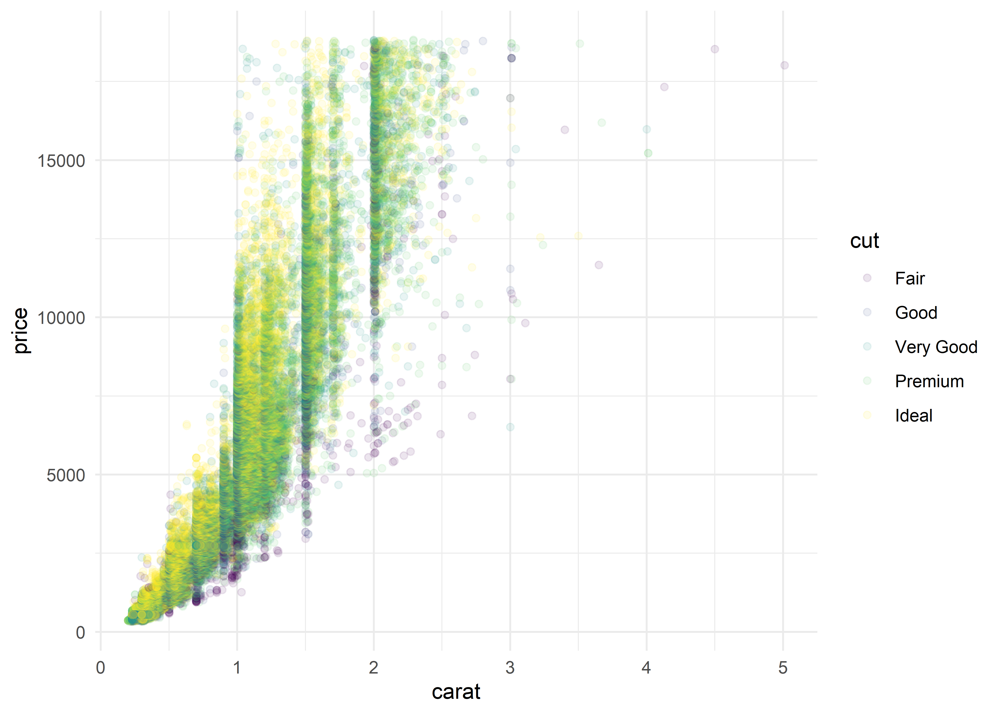

Polling Average of the VA Governor’s Race using purrr::map functions
politics
Author
Mark Rieke
Published
October 19, 2021
Rolling poll averages can be misleading in the absence of errorbars or an expected distribution of outcomes. FiveThirtyEight is currently tracking polls of Virginia’s Governor race slated for early November, and has kindly made their polls available to the public. Their current polling average, however, looks to be a simple rolling average and doesn’t include a confidence interval. I’ve attempted to improve upon their tracker here by providing a weighted polling average and a 95% confidence interval.
How this works
Since we’re only considering the top candidates from each party, we’ll look at each candidate’s two-party voteshare of each poll. To get the two-party voteshare, third party or other minor candidates are removed from each poll and each candidate’s percentage is recalculated as if they were the only two options on the ballot (in practice, this only removes a tiny amount of undecideds and third party voters). Then, the daily polling average is calculated by weighting each poll by sample size and recency. Using Bayes’ theorem and a weak uniform prior, we can use the same method recalculate the polling average and confidence interval for each day between today and the election. Because polls are weighted by recency, as we look further and further into the future, our confidence in the polls decreases and the confidence interval around the polling average fans out. Each candidate’s probability of winning is the portion of the portion of the projected election-day polling distribution in their favor, based on that day’s polling average.
Some caveats worth noting
This is an inherently flawed method, and it’s worth pointing out a few of the flaws and shortcuts I used:
The functions used to weight polls are nowhere near perfect.
The original weighting functions (which I haven’t changed) were chosen somewhat arbitrarily. In hindsight, they’re probably placing too much emphasis on recency and the error bars ought to be larger. While I have received some advice on tuning arbitrary functions as a part of a larger model, I haven’t implemented here. It’s more prudent to think of this as an over-confident polling aggregate, rather than any sort of model. For a true projection model, I’d recommend looking at Jack Kersting’s website.
The weighting method ignores important weighting factors
This weighting method is super simple and ignores common weighting factors, like pollster and survey methodology. Other less-common poll weighting methods, like accounting for partisan non-response bias and and how the pollster weights their results (notably, whether or not the pollster weights by education) were similarly ignored. There is definitely a strong argument for including these weighting factors, but for me, this exercise was more about learning to use purrr::map() and other related functions when writing the script for this plot.
Some pollsters are filtered out by design
I debated this for quite some time, but decided to add a filter to remove polls conducted by Rasmussen and Trafalgar. Trafalgar is excluded from any of the Economist’s polling databases for opaque yet clearly shoddy methodology and Rasmussen is clearly partisan. Removing these from the average follows the general consensus on ET (though, to be transparent, ET does tend to slant far to the left). In future polling projects, I’d hope to develop some more robust methodology to programatically downweight problematic pollsters (how’s that for a tongue twister?), but for now I’m just going to exclude.
Final thoughts on polling
This methodology certainly has its flaws, but it istransparent. I’ll continuously update this plot up until election day on my github.
Some programming notes
I’ve finished migrating my site to Netlify! I had originally planned to make the switch from Squarespace sometime early in 2022, but motivation struck me during a relatively light work week and I was able to rebuild the site using blogdown. This allows for a lot more customization and control than was available with Squarespace, but the biggest upside is definitely the ease of sharing in-line code, here’s a quick example:
Code
library(tidyverse)# let's put together a plot from the diamonds datasetdiamonds %>%ggplot(aes(x = carat,y = price,color = cut)) +geom_point(alpha =0.1) +theme_minimal() + viridis::scale_color_viridis(discrete =TRUE)

This ease of use and visibility will make things more seamless for me and allow me to dig into more technical content in more detail in the future!
I’ll be taking a (much needed) vacation next week, spending some time off the grid in the Grand Canyon and surrounding area with my family. I’ve got a short post lined up for early November when I return - see you then!